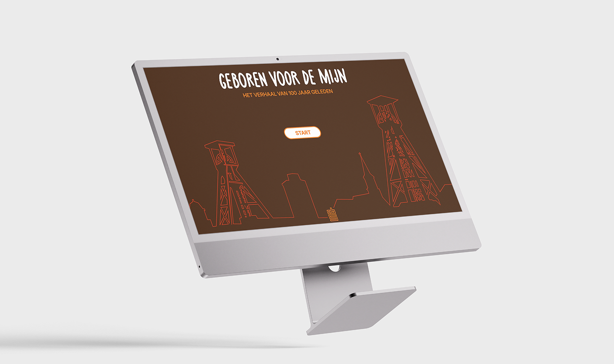
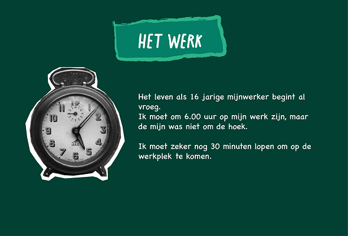
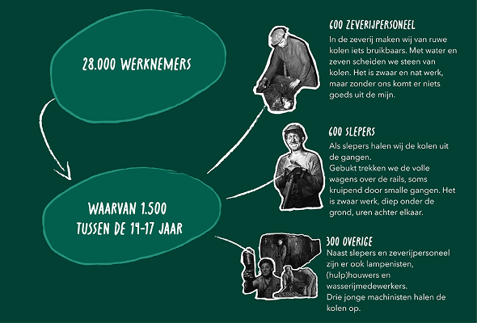
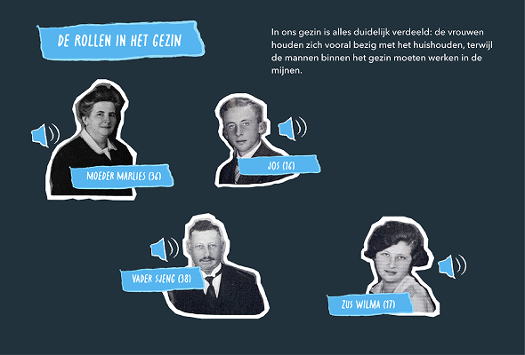

GEBOREN VOOR DE MIJN - STORYTELLING

Branding | Storytelling | Research | Mulitmediastory
For this project, we developed a multimedia story in collaboration with CBS about the life of a 16-year-old
coal miner 100 years ago. Together with my teammates, we created an interactive story set in three
environments: family life, work in the mines, and leisure time.
The goal was to bring historical data to life through storytelling and multimedia design.




